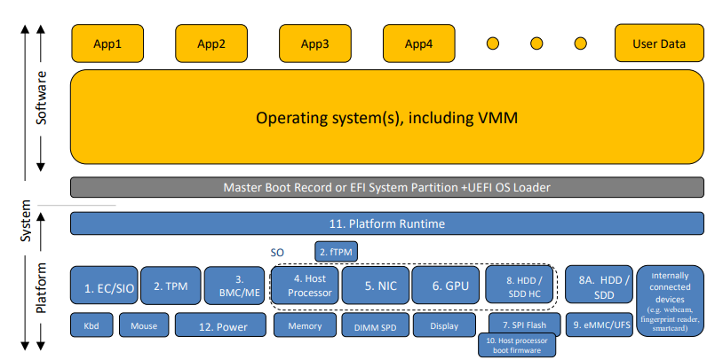

| first | Daisy Diff compare report.
Click on the changed parts for a detailed description. Use the left and right arrow keys to walk through the modifications. |
last  |
| first | Daisy Diff compare report.
Click on the changed parts for a detailed description. Use the left and right arrow keys to walk through the modifications. |
last |

| Version | Date | Comment |
|---|---|---|
| 0.1 | 2020-11-16 | Started |
| 1.0 | 2022-02-10 | Initial publication. |
| 1.1 | 2024-12-13 | Updates for CC:2022 |
| 2.0 | 2025-01-13 | Draft: Incorporate TRRTs |
| 2.0 | 2026-03-24 | Draft: New draft with revisions from contributors |
|
Assurance
| Grounds for confidence that a TOE meets the SFRs [CC]. |
|
Base Protection Profile (Base-PP)
| Protection Profile used as a basis to build a PP-Configuration. |
|
Collaborative Protection Profile (cPP)
| A Protection Profile developed by international technical communities and approved by multiple schemes. |
|
Common Criteria (CC)
| Common Criteria for Information Technology Security Evaluation (International Standard ISO/IEC 15408). |
|
Common Criteria Testing Laboratory
| Within the context of the Common Criteria Evaluation and Validation Scheme (CCEVS), an IT security evaluation facility accredited by the National Voluntary Laboratory Accreditation Program (NVLAP) and approved by the NIAP Validation Body to conduct Common Criteria-based evaluations. |
|
Common Evaluation Methodology (CEM)
| Common Evaluation Methodology for Information Technology Security Evaluation. |
|
Direct Rationale
| A type of Protection Profile, PP-Module, or Security Target in which the security problem definition (SPD) elements are mapped directly to the SFRs and possibly to the security objectives for the operational environment. There are no security objectives for the TOE. |
|
Extended Package (EP)
| A deprecated document form for collecting SFRs that implement a particular protocol, technology, or functionality. See Functional Packages. |
|
Functional Package (FP)
| A document that collects SFRs for a particular protocol, technology, or functionality. |
|
Operational Environment (OE)
| Hardware and software that are outside the TOE boundary that support the TOE functionality and security policy. |
|
Protection Profile (PP)
| An implementation-independent set of security requirements for a category of products. |
|
Protection Profile Configuration (PP-Configuration)
| A comprehensive set of security requirements for a product type that consists of at least one Base-PP and at least one PP-Module. |
|
Protection Profile Module (PP-Module)
| An implementation-independent statement of security needs for a TOE type complementary to one or more Base-PPs. |
|
Security Assurance Requirement (SAR)
| A requirement to assure the security of the TOE. |
|
Security Functional Requirement (SFR)
| A requirement for security enforcement by the TOE. |
|
Security Target (ST)
| A set of implementation-dependent security requirements for a specific product. |
|
Target of Evaluation (TOE)
| The product under evaluation. |
|
TOE Security Functionality (TSF)
| The security functionality of the product under evaluation. |
|
TOE Summary Specification (TSS)
| A description of how a TOE satisfies the SFRs in an ST. |
|
Administrator
| An Administrator is responsible for management activities, including setting policies that are applied by the enterprise on the platform. An Administrator can act remotely through a management server, from which the platform receives configuration policies and updates. An Administrator can enforce settings on the system that cannot be overridden by non-Administrator users. |
|
American National Standards Institute (ANSI)
| A private organization that oversees development of standards in the United States. |
|
Application
| Software that runs on a platform and performs tasks on behalf of the user or owner of the platform. |
|
Application Programming Interface (API)
| A specification of routines, data structures, object classes, and variables that allows an application to make use of services provided by another software component, such as a library. APIs are often provided for a set of libraries included with the platform. |
|
Baseboard Management Controller (BMC)
| Or Management Controller. A small computer generally found on Server motherboards that performs management tasks on behalf of an Administrator. |
|
Bill of Materials (BOM)
| A manifest document containing identifying information about a piece of hardware, firmware, or software along with measurements (usually hashes) describing what the vendor intended for the client to receive. The BOM should be signed. BOMs may accompany updates or product revisions to describe intended changes. |
|
Cipher-based Message Authentication Code (CMAC)
| A mode of AES that provides authentication, but not confidentiality. |
|
Commercial Solutions for Classified (CSfC)
| An US Department of Defense program for delivering cybersecurity solutions that leverage commercial technologies and products. |
|
Credential
| Data that establishes the identity of a user, e.g. a cryptographic key or password. |
|
Data-at-Rest (DAR) Protection
| Countermeasures that prevent attackers, even those with physical access, from extracting data from non-volatile storage. Common techniques include data encryption and wiping. |
|
Developer
| An entity that manufactures platform hardware or writes platform software/firmware. For the purposes of this document, vendors and developers are the same. |
|
Diffie-Hellman Key Exchange (DH)
| A cryptographic key exchange protocol using public/private key pairs. |
|
Distinguished Name (DN)
| Information used in certificate-based operations to uniquely identify a person, organization, or business. |
|
End-User Device (EUD)
| A class of computing platform characterized by having a user interface for a single user. Often, EUDs are portable (e.g., laptop, tablet, mobile device), but this is not necessarily the case (e.g., desktop PC). |
|
General Purpose Operating System
| A class of OS designed to support a wide-variety of workloads consisting of many concurrent applications or services. Typical characteristics for OSes in this class include support for third-party applications, support for multiple users, and security separation between users and their respective resources. |
|
General-Purpose Computing Platform (GPCP)
| A physical computing platform designed to support general-purpose operating systems, virtualization systems, and applications. |
|
Internet of Things (IoT)
| Physical computing devices that are embedded with sensors, processing ability, software, and other technologies that connect and exchange data with other devices and systems over communications networks. |
|
Joint Test Action Group (JTAG)
| A standard for verifying and testing circuit boards after manufacture. |
|
KECCAK Message Authentication Code (KMAC)
| A variable-length keyed hash function described in NIST SP 800-185. |
|
Management Controller (MC)
| Or Baseboard Management Controller (BMC). A small computer generally found on server motherboards that performs management tasks on behalf of an Administrator. |
|
Open Mobile Terminal Platform (OMTP)
| A forum created by mobile network operators to discuss standards with manufacturers of mobile devices. |
|
Operating System (OS)
| Software that manages physical and logical resources and provides services for applications. Operating systems are the generally the primary tenant of a GPCP. |
|
Physical Presence
| A user or administrator having physical access to the TOE. An assertion of physical presence can take the form, for example, of requiring entry of a password at a boot screen, unlocking of a physical lock (e.g., a motherboard jumper), or inserting a USB cable before permitting platform firmware to be updated. |
|
Root of Trust (RoT)
| Roots of trust are highly reliable hardware, firmware, and software components that perform specific, critical security functions. Roots of trust are the foundation for integrity of computing devices. |
|
Sensitive Data
| Sensitive data may include all user or enterprise data or may be specific application data such as PII, emails, messaging, documents, calendar items, and contacts. Sensitive data must minimally include credentials and keys. |
|
Subject Alternative Name (SAN)
| An extended X.509 certificate field. |
|
Tenant Software
| Software that runs on and is supported by a platform. In the case of a GPCP, tenant software generally consists of an operating system, virtualization system, or "bare-metal" application. |
|
Trusted Execution Environment (TEE)
| An isolated and secure area that ensures the confidentiality and integrity of code and data loaded inside. |
|
Trusted Platform Module (TPM)
| A security processor that provides services for cryptographic key management, encryption and decryption, platform integrity management, and device identity. TPMs that are discrete/dedicated chips (dTPM) or firmware/integrated with another component such as the CPU (fTPM) are within the scope of a GPCP TOE. Virtual/software TPMs (vTPM) are out of scope. |
|
User
| In the context of a GPCP, a User is a human who interacts with the platform through a user interface. Users do not need to be authenticated by the platform to use the platform, but generally authenticate to tenant software such as on Operating System. |
|
Virtualization System (VS)
| A software product that enables multiple independent computing systems to execute on the same physical hardware platform without interference from one other. |

For changes to included SFRs, selections, and assignments required for this use case, see F.1 Server-Class Platform, Physically Secure Environment.
For changes to included SFRs, selections, and assignments required for this use case, see F.2 Server-Class Platform, Enhanced Security Requirements.
For changes to included SFRs, selections, and assignments required for this use case, see F.3 Portable Clients (laptops, tablets), Enhanced Security Requirements.
For changes to included SFRs, selections, and assignments required for this use case, see F.4 CSfC EUD.
For changes to included SFRs, selections, and assignments required for this use case, see F.5 Tactical EUD.
For changes to included SFRs, selections, and assignments required for this use case, see F.6 Enterprise Desktop Clients.
This PP defines no Organizational Security Policies.
| Assumption or OSP | Security Objectives | Rationale |
| A.PHYSICALCORRECT_PROTECTIONINITIAL_CONFIGURATION | OE.PHYSICALTRUSTED_PROTECTIONADMIN | The operational environment objective OE.PHYSICALTRUSTED_PROTECTIONADMIN is realized through A.PHYSICALTRUSTED_PROTECTIONADMIN. |
| A.ROTMFR_INTEGRITYROT | OE.SUPPLYTRUSTED_CHAINADMIN | The operational environment objective OE.SUPPLYTRUSTED_CHAINADMIN is realized through A.ROTTRUSTED_INTEGRITYADMIN. |
| A.TRUSTEDPHYSICAL_ADMINPROTECTION | OE.TRUSTEDPHYSICAL_ADMINPROTECTION | The operational environment objective OE.TRUSTEDPHYSICAL_ADMINPROTECTION is realized through A.TRUSTEDPHYSICAL_ADMINPROTECTION. |
| A.MFRREGULAR_ROTUPDATES | OE.TRUSTED_ADMIN | The operational environment objective OE.TRUSTED_ADMIN is realized through A.TRUSTED_ADMIN. |
| A.TRUSTED_DEVELOPMENT_AND_BUILD_PROCESSESROT_INTEGRITY | OE.TRUSTEDSUPPLY_ADMINCHAIN | The operational environment objective OE.TRUSTEDSUPPLY_ADMINCHAIN is realized through A.TRUSTEDROT_ADMININTEGRITY. |
| A.SUPPLY_CHAIN_SECURITY | OE.TRUSTED_ADMIN | The operational environment objective OE.TRUSTED_ADMIN is realized through A.TRUSTED_ADMIN. |
| A.CORRECTTRUSTED_INITIAL_CONFIGURATIONADMIN | OE.TRUSTED_ADMIN | The operational environment objective OE.TRUSTED_ADMIN is realized through A.TRUSTED_ADMIN. |
| A.TRUSTED_USERSDEVELOPMENT_AND_BUILD_PROCESSES | OE.TRUSTED_ADMIN | The operational environment objective OE.TRUSTED_ADMIN is realized through A.TRUSTED_ADMIN. |
| A.REGULARTRUSTED_UPDATESUSERS | OE.TRUSTED_ADMIN | The operational environment objective OE.TRUSTED_ADMIN is realized through A.TRUSTED_ADMIN. |
| Requirement | Auditable Events | Additional Audit Record Contents |
|---|---|---|
| FCS_RBG.6 | ||
| No events specified | N/A | |
| FMT_CFG_EXT.1 | ||
| No events specified | N/A | |
| FMT_LIM.1 | ||
| No events specified | N/A | |
| FMT_LIM.2 | ||
| No events specified | N/A | |
| FMT_MOF.1 | ||
| No events specified | N/A | |
| FMT_SMF.1 | ||
| No events specified | N/A | |
| FMT_SMR.1 | ||
| No events specified | N/A | |
| FPT_PPF_EXT.1 | ||
| No events specified | N/A | |
| FPT_ROT_EXT.1 | ||
| No events specified | N/A | |
| FPT_ROT_EXT.2 | ||
| [selection: Failure of integrity verification, None] | None. | |
| FPT_STM.1 | ||
| No events specified | N/A | |
| FPT_TUD_EXT.1 | ||
| No events specified | N/A |
This component may also be included in the ST as if optional.
| Identifier | Cryptographic key generation algorithm | Cryptographic algorithm parameters | List of standards |
|---|---|---|---|
| RSA | RSA | Modulus of size [selection: 3072, 4096, 6144, 8192] bits | NIST FIPS PUB 186-5 (Section A.1.1) |
| ECC-ERB | ECC-ERB - Extra Random Bits | Elliptic Curve [selection: P-384, P-521] | FIPS PUB 186-5 (Section A.2.1) NIST SP 800-186 (Section 3) [NIST Curves] |
| ECC-RS | ECC-RS - Rejection Sampling | Elliptic Curve [selection: P-384, P-521] | FIPS PUB 186-5 (Section A.2.2) NIST SP 800-186 (Section 3) [NIST Curves] |
| FFC-ERB | FFC-ERB - Extra Random Bits | Static domain parameters approved for [selection:
| NIST SP 800-56A Revision 3 (Section 5.6.1.1.3) [key pair generation] [selection: RFC 3526 [IKE groups], RFC 7919 [TLS groups]] |
| FFC-RS | FFC-RS - Rejection Sampling | Static domain parameters approved for [selection:
| NIST SP 800-56A Revision 3 (Section 5.6.1.1.3) [key pair generation] [selection: RFC 3526 [IKE groups], RFC 7919 [TLS groups]] |
| LMS | LMS | Private key size = [selection: ] Winternitz parameter = [selection: 1, 2, 4, 8] Tree height = [selection: 5, 10, 15, 20, 25] | RFC 8554 [LMS] NIST SP 800-208 [parameters] |
| ML-KEM | ML-KEM KeyGen | Parameter set = ML-KEM-1024 | NIST FIPS 203 (Section 7.1) |
| ML-DSA | ML-DSA KeyGen | Parameter set = ML-DSA-87 | NIST FIPS 204 (Section 5.1) |
| XMSS | XMSS | Private key size = [selection: ] Tree height = [selection: 10, 16, 20] | RFC 8391 [XMSS] NIST SP 800-208 [parameters] |
This component may also be included in the ST as if optional.
| Identifier | Cryptographic Key Generation Algorithm | Cryptographic Key Sizes | List of standards |
|---|---|---|---|
| RSK | Direct Generation from a Random Bit Generator as specified in FCS_RBG.1 | [selection: 256, 384, 512] bits | NIST SP 800-133 Revision 2 (Section 6.1)[Direct generation of symmetric keys] |
This component may also be included in the ST as if optional.
| Key type | Input parameters | Key derivation algorithm | Key sizes | List of standards |
|---|---|---|---|---|
| KDF-CTR | [selection: Direct Generation from a Random Bit Generator as specified in FCS_RBG.1, Concatenated keys] | KPF2 - KDF in Counter Mode using [selection: AES-256-CMAC, HMAC-SHA-384, HMAC-SHA-512] as the PRF | [selection: 256, 384, 512] bits | [selection: ISO/IEC 11770-6:2016 (Subclause 7.3.2) [KPF2], NIST SP 800-108 Revision 1 Update 1 (Section 4.1) [KDF in Counter Mode]] |
| KDF-FB | [selection: Direct Generation from a Random Bit Generator as specified in FCS_RBG.1, Concatenated keys] | KPF3 - KDF in Feedback Mode using [selection: AES-256-CMAC, HMAC-SHA-384, HMAC-SHA-512] as the PRF | [selection: 256, 384, 512] bits | [selection: ISO/IEC 11770-6:2016 (Subclause 7.3.3) [KPF3], NIST SP 800-108 Revision 1 Update 1 (Section 4.2) [KDF in Feedback Mode]] |
| KDF-DPI | [selection: Direct Generation from a Random Bit Generator as specified in FCS_RBG.1, Concatenated keys] | KDF in Double Pipeline Iteration Mode using [selection: AES-256-CMAC, HMAC-SHA-384, HMAC-SHA-512] as the PRF | [selection: 256, 384, 512] bits | [selection: ISO/IEC 11770-6:2016 (Subclause 7.3.4) [KPF4], NIST SP 800-108 Revision 1 Update 1 (Section 4.3) [KDF in Double-Pipeline Iteration Mode]] |
| KDF-XOR | More than one intermediary key | exclusive OR (XOR) | [selection: 256, 384, 512] bits | N/A |
| KDF-ENC | Two keys | Encrypting using an algorithm specified in [selection: FCS_COP.1/SKC, FCS_COP.1/AEAD] with a 256-bit key. | [selection: 256, 384, 512] bits | N/A |
| KDF-HASH | Shared secret | Hash function [selection: SHA-384, SHA-512] | [selection: 256, 384, 512] bits | NIST SP 800-56C Revision 2 (Section 4.1, Option 1) [One-Step Key Derivation] |
| KDF-MAC-1S | Shared secret, salt, IV, output length, fixed information | Keyed hash [selection: HMAC-SHA-384, HMAC-SHA-512] | [selection: 256, 384, 512] bits | NIST SP 800-56C Revision 2 (Section 4.1, Options 2, 3) [One-Step Key Derivation] |
| KDF-MAC-2S | Shared secret, salt, IV, output length, fixed information, and [selection: auxiliary shared secret, no other parameters] | MAC Step [selection: HMAC-SHA-384, HMAC-SHA-512] as randomness extraction and; KDF Step [selection: KDF-CTR, KDF-FB, KDF-DPI]. | [selection: 256, 384, 512] bits | NIST SP 800-56C Revision 2 (Section 5) [Two-Step Key Derivation] |
This component may also be included in the ST as if optional.
| Identifier | Cryptographic algorithm | Cryptographic parameters | List of standards |
|---|---|---|---|
| DH | Finite Field Cryptography Diffie-Hellman | Static domain parameters approved for [selection:
| NIST SP 800-56A Revision 3 (Section 5.7.1.1) [DH] [selection: RFC 3526 [IKE groups], RFC 7919 [TLS groups]] |
| ECDH | Elliptic Curve Diffie-Hellman | Elliptic Curve [selection: P-384, P-521] | NIST SP 800-56A Revision 3 (Section 5.7.1.2) [ECDH] NIST SP 800-186 (Section 3.2.1) [NIST Curves] |
This component may also be included in the ST as if optional.
| Identifier | Cryptographic algorithm | Cryptographic key sizes | List of standards |
|---|---|---|---|
| AES-CCM | AES in CCM mode with unpredictable, non-repeating nonce, minimum size of 64 bits | 256 bits | [selection: ISO/IEC 18033-3:2010 (Subclause 5.2), FIPS PUB 197] [AES] [selection: ISO/IEC 19772:2020 (Clause 7), NIST SP 800-38C] [CCM] |
| AES-GCM | AES in GCM mode with non-repeating IVs using [selection: deterministic, DRBG-based], IV construction; the tag must be of length [selection: 96, 104, 112, 120, 128] bits. | 256 bits | [selection: ISO/IEC 18033-3:2010 (Subclause 5.2), FIPS PUB 197] [AES] [selection: ISO/IEC 19772:2020 (Clause 10), NIST SP 800-38D] [GCM] |
This component may also be included in the ST as if optional.
| Identifier | Cryptographic algorithm | Cryptographic key sizes | List of standards |
|---|---|---|---|
| AES-CMAC | AES using CMAC mode | 256 bits | [selection: ISO/IEC 18033-3:2010 (Subclause 5.2), FIPS PUB 197] [AES] [selection: : ISO/IEC 9797-1:2011 Subclause 7.6, NIST SP 800-38B] [CMAC] |
This component may also be included in the ST as if optional.
This component may also be included in the ST as if optional.
| Keyed Hash Algorithm | Cryptographic key sizes | List of standards |
|---|---|---|
| HMAC-SHA-384 | [selection: 384 (ISO, FIPS), 256 (FIPS)] bits | [selection: ISO/IEC 9797-2:2021 (Section 7 "MAC Algorithm 2"), FIPS PUB 198-1] |
| HMAC-SHA-512 | [selection: 512 (ISO, FIPS), 384 (FIPS), 256 (FIPS)] bits | [selection: ISO/IEC 9797-2:2021 (Section 7 "MAC Algorithm 2"), FIPS PUB 198-1] |
| Identifier | Cryptographic algorithm | Cryptographic key sizes | List of standards |
|---|---|---|---|
| KAS1 | RSASVE | [selection: 3072, 4096, 6144, 8192] bits | NIST SP 800-56B Revision 2 (Section 8.2) |
| KTS-OAEP | RSA-OAEP | [selection: 3072, 4096, 6144, 8192] bits | NIST SP 800-56B Revision 2 (Sections 6.3 and 9) |
| ML-KEM | ML-KEM | Parameter set = ML-KEM-1024 | NIST FIPS 203 |
| Identifier | Cryptographic algorithm | Cryptographic key sizes | List of standards |
|---|---|---|---|
| AES-KW | AES in KW mode | 256 bits | [selection: ISO/IEC 18033-3:2010 (Subclause 5.2), FIPS PUB 197] [AES] [selection: ISO/IEC 19772:2020 (clause 6), NIST SP 800-38F (Section 6.2)] [KW mode] |
| AES-KWP | AES in KWP mode | 256 bits | [selection: ISO/IEC 18033-3:2010 (Subclause 5.2), FIPS PUB 197] [AES] NIST SP 800-38F (Section 6.3) [KWP mode] |
| AES-CCM | AES in CCM mode with unpredictable, non-repeating nonce, minimum size of 64 bits | 256 bits | [selection: ISO/IEC 18033-3:2010 (Subclause 5.2), FIPS PUB 197] [AES] [selection: ISO/IEC 19772:2020 (Clause 7), NIST SP 800-38C] [CCM] |
| AES-GCM | AES in GCM mode with non-repeating IVs using [selection: deterministic, DRBG-based], IV construction; the tag must be of length [selection: 96, 104, 112, 120, 128] bits. | 256 bits | [selection: ISO/IEC 18033-3:2010 (Subclause 5.2), FIPS PUB 197] [AES] [selection: ISO/IEC 19772:2020 (Clause 10), NIST SP 800-38D] [GCM] |
This component may also be included in the ST as if optional.
| Identifier | Cryptographic algorithm | Cryptographic key sizes | List of standards |
|---|---|---|---|
| RSA-PKCS | RSASSA-PKCS1-v1_5 | Modulus of size [selection: 3072, 4096, 6144, 8192] bits, hash [selection: SHA-384, SHA-512] | RFC 8017 (Section 8.2) [PKCS #1 v2.2] FIPS PUB 186-5 (Section 5.4) [RSASSA-PKCS1-v1_5] |
| RSA-PSS | RSASSA-PSS | Modulus of size [selection: 3072, 4096, 6144, 8192] bits, hash [selection: SHA-384, SHA-512], Salt Length (sLen) such that [assignment: 0 ≤ sLen ≤ hLen (Hash Output Length)] and Mask Generation Function = MGF1 | RFC 8017 (Section 8.1) [PKCS#1 v2.2] FIPS PUB 186-5 (Section 5.4) [RSASSA-PSS] |
| ECDSA | ECDSA | Elliptic Curve [selection: P-384, P-521], per-message secret number generation [selection: extra random bits, rejection sampling, deterministic] and hash function using [selection: SHA-384, SHA-512] | [selection: ISO/IEC 14888-3:2018 (Subclause 6.6), FIPS PUB 186-5 (Sections 6.3.1, 6.4.1]] [ECDSA] NIST SP-800 186 (Section 4) [NIST Curves] |
| LMS | LMS | Private key size = [selection: ] Winternitz parameter = [selection: 1, 2, 4, 8] Tree height = [selection: 5, 10, 15, 20, 25] | RFC 8554 [LMS] NIST SP 800-208 [parameters] |
| ML-DSA | ML-DSA Signature Generation | Parameter set = ML-DSA-87 | NIST FIPS 204 (Section 5.2) |
| XMSS | XMSS | Private key size = [selection: ] Tree height = [selection: 10, 16, 20] | RFC 8391 [XMSS] NIST SP 800-208 [parameters] |
This component may also be included in the ST as if optional.
| Identifier | Cryptographic algorithm | Cryptographic key sizes | List of standards |
|---|---|---|---|
| RSA-PKCS | RSASSA-PKCS1-v1_5 | Modulus of size [selection: 3072, 4096, 6144, 8192] bits and hash [selection: SHA-384, SHA-512] | RFC 8017 (Section 8.2) [PKCS #1 v2.2] FIPS PUB 186-5 (Section 5.4) [RSASSA-PKCS1-v1_5] |
| RSA-PSS | RSASSA-PSS | Modulus of size [selection: 3072, 4096, 6144, 8192] bits and hash [selection: SHA-384, SHA-512] | RFC 8017 (Section 8.1) [PKCS#1 v2.2] FIPS PUB 186-5 (Section 5.4) [RSASSA-PSS] |
| ECDSA | ECDSA | Elliptic Curve [selection: P-384, P-521] using hash [selection: SHA-384, SHA-512] | [selection: ISO/IEC 14888-3:2018 (Subclause 6.6), FIPS PUB 186-5 (Section 6.4.2)] [ECDSA] NIST SP-800 186 (Section 4) [NIST Curves] |
| LMS | LMS | Private key size = [selection: ] Winternitz parameter = [selection: 1, 2, 4, 8] Tree height = [selection: 5, 10, 15, 20, 25] | RFC 8554 [LMS] NIST SP 800-208 [parameters] |
| XMSS | XMSS | Private key size = [selection: ] Tree height = [selection: 10, 16, 20] | RFC 8391 [XMSS] NIST SP 800-208 [parameters] |
| ML-DSA | ML-DSA Signature Verification | Parameter set = ML-DSA-87 | NIST FIPS 204 (Section 5.3) |
This component may also be included in the ST as if optional.
| Identifier | Cryptographic Algorithm | Cryptographic Key Sizes | List of Standards |
|---|---|---|---|
| AES-CBC | AES in CBC mode with non-repeating and unpredictable IVs | 256 bits | [selection: ISO/IEC 18033-3:2010 (Subclause 5.2), FIPS PUB 197] [AES] [selection: ISO/IEC 10116:2017 (Clause 7), NIST SP 800-38A] [CBC] |
| XTS-AES | AES in XTS mode with unique tweak values that are consecutive non-negative integers starting at an arbitrary non-negative integer | 512 bits | [selection: ISO/IEC 18033-3:2010 (Subclause 5.2), FIPS PUB 197] [AES] [selection: IEEE Std. 1619-2018, NIST SP 800-38E] [XTS] |
| AES-CTR | AES in Counter Mode with a non-repeating initial counter and with no repeated use of counter values across multiple messages with the same secret key | 256 bits | [selection: ISO/IEC 18033-3:2010 (Subclause 5.2), FIPS PUB 197] [AES] [selection: : ISO/IEC 10116:2017 (Clause 10), NIST SP 800-38A] [CTR] |
| Cryptographic Algorithm | Parameters | List of Standards |
|---|---|---|
| SHAKE | Functions = [SHAKE256] | NIST FIPS PUB 202 Section 6.2 [SHAKE] |
This component may also be included in the ST as if optional.
| Identifier | DRBG Algorithm | List of standards |
|---|---|---|
| HASH_DRBG | Hash_DRBG with [selection: SHA-384, SHA-512] | [selection: ISO/IEC 18031: 2011 (Section C.2.2), NIST SP 800-90A Revision 1 Section 10.1.1] |
| HMAC_DRBG | HMAC_DRBG with [selection: SHA-384, SHA-512] | [selection: ISO/IEC 18031: 2011 (Section C.2.3), NIST SP 800-90A Revision 1 Section 10.1.2] |
| CTR_DRBG | CTR_DRBG with AES-CTR-256 | [selection: ISO/IEC 18031: 2011 (Section C.3.2), NIST SP800-90A Revision 1 Section 10.2.1] |
For the selection in this requirement, the ST author selects "TSF entropy source..." if a single entropy source is used as input to the DRBG. The ST author selects "multiple TSF entropy sources..." if a seed is formed from a combination of two or more entropy sources within the TOE boundary. If the TSF implements two or more separate DRBGs that are seeded in separate manners, this SFR should be iterated for each DRBG. It multiple distinct entropy sources exist such that each DRBG only uses one of them, then each iteration would select "TSF entropy source..."; "multiple TSF entropy sources..." is only selected if a single DRBG uses multiple entropy sources for its seed. The ST author selects "TSF interface for obtaining entropy" if entropy source data is generated outside the TOE boundary.
If "TSF entropy source..." is selected, FCS_RBG.3 must be claimed.
If "multiple TSF entropy sources..." is selected, FCS_RBG.4 and FCS_RBG.5 must be claimed.
If "TSF interface for obtaining entropy" is selected, FCS_RBG.2 must be claimed.
This SFR is claimed if "TSF interface for obtaining entropy" is selected in FCS_RBG.1.2, i.e. the TOE's entropy source is outside the TOE boundary. In the case of a general purpose computing platform this would likely only occur when the entropy source is a Dedicated Security Component that is integrated with the TOE.
The ST author specifies 384 bits of entropy in the selection if the TOE uses an AES-CTR_DRBG and there is no derivation function, and 256 bits of entropy for all other DRBG implementations. If the environmental entropy source produces full entropy, the amount of entropy data collected is equal to the amount specified in the selection. If the entropy source does not assure full entropy (i.e. the ratio of min-entropy to collected data is less than 1:1), then the TSF must collect sufficient additional entropy data and perform a derivation function on it to reduce the collected data to a seed with the claimed min-entropy. In this case, the entropy documentation is expected to identify the min-entropy rate of the source data, how much data the TSF collects, and what derivation function is performed on this collected data to ensure that it has the claimed min-entropy.
One should not apply NIST SP 800-90B (or AIS-31) statistical tests against an external entropy source since the TSF is unable to enforce entropy requirements or conditioning requirements against something outside of its logical boundary. However, the TSS may include estimates for min-entropy from external sources that contribute to the overall entropy requirements for the DRBG.
This SFR is claimed if "TSF entropy source..." is selected in FCS_RBG.1.2, i.e. the TOE has a single entropy source that is inside the TOE boundary. If the TOE obtains seed material from an environmental component, this is specified using FCS_RBG.2.
The ST author specifies 384 bits of entropy in the selection if the TOE uses an AES-CTR_DRBG and there is no derivation function, and 256 bits of entropy for all other DRBG implementations. If the TSF entropy source produces full entropy, the amount of entropy data collected is equal to the amount specified in the selection. If the entropy source does not assure full entropy (i.e. the ratio of min-entropy to collected data is less than 1:1), then the TSF must collect sufficient additional entropy data and perform a derivation function on it to reduce the collected data to a seed with the claimed min-entropy. In this case, the entropy documentation is expected to identify the min-entropy rate of the source data, how much data the TSF collects, and what derivation function is performed on this collected data to ensure that it has the claimed min-entropy.
One can apply NIST SP 800-90B (or AIS-31) statistical tests against internal entropy sources (aka raw entropy) to confirm the min-entropy of the entropy source.
This SFR is claimed if "multiple TSF entropy sources..." is selected in FCS_RBG.1.2, i.e. the TSF performs some sort of operation to combine data from multiple distinct sources into a value that is used to derive a seed. If the TOE has only a single entropy source, this is specified using FCS_RBG.3. FCS_RBG.5 defines the mechanism by which these sources are combined to ensure sufficient minimum entropy.
This SFR is claimed if "multiple TSF entropy sources..." is selected in FCS_RBG.1.2, i.e. the TSF performs some sort of operation to combine data from multiple distinct sources into a value that is used to derive a seed. If the TOE has only a single entropy source, this is specified using FCS_RBG.3.
The ST author specifies 384 bits of entropy in the selection if the TOE uses an AES-CTR_DRBG and there is no derivation function, and 256 bits of entropy for all other DRBG implementations. If the environmental entropy source produces full entropy, the amount of entropy data collected is equal to the amount specified in the selection. If the entropy source does not assure full entropy (i.e. the ratio of min-entropy to collected data is less than 1:1), then the TSF must collect sufficient additional entropy data and perform a derivation function on it to reduce the collected data to a seed with the claimed min-entropy. In this case, the entropy documentation is expected to identify the min-entropy rate of the source data, how much data the TSF collects, and what derivation function is performed on this collected data to ensure that it has the claimed min-entropy.
One can apply NIST SP 800-90B (or AIS-31) statistical tests against internal entropy sources (aka raw entropy) to confirm the min-entropy of the entropy sources either in aggregate or individually.
| # | Management Function | Admin | User | Application Notes |
| 1 | Ability to administer the platform [selection: locally, remotely]. |
OOptional/Conditional
|
XNot permitted
|
Administration is considered "local" if the Administrator is physically present at the GPCP. Administration is considered "remote" if communications between the Administrator and GPCP is over a network. If "locally" is selected, then function 6 is mandatory. If "remotely" is selected, then FTP_TRP.1 must be claimed in the ST and functions 5, 6, and 13 are mandatory. |
| 2 | Ability to configure and manage the audit functionality and audit data. |
OOptional/Conditional
|
XNot permitted
|
Management of audit data includes the ability to delete it. This Function must be claimed if FAU_GEN.1 is claimed in the ST. |
| 3 | Ability to configure name/address of audit/logging server to which to send audit/logging records. |
OOptional/Conditional
|
XNot permitted
|
This function must be claimed if FAU_STG.1 is claimed in the ST. |
| 4 | Ability to review audit records. |
OOptional/Conditional
|
XNot permitted
|
This Function must be claimed if FAU_SAR.1 is claimed in the ST. |
| 5 | Ability to initiate a trusted channel or accept an incoming channel for remote administration. |
OOptional/Conditional
|
XNot permitted
|
This Function must be claimed if FTP_TRP.1 is claimed in the ST. This function is mandatory when function 1 remote administrator is selected. |
| 6 | Ability to manage authentication credentials for Administrators. |
OOptional/Conditional
|
XNot permitted
|
This Function must be claimed if FIA_UIA_EXT.1 is claimed in the ST. This function is mandatory when function 1 is selected (local or remote). |
| 7 | Ability to set parameters for allowable number of authentication failures. |
OOptional/Conditional
|
XNot permitted
|
This Function must be claimed if FIA_AFL_EXT.1 is claimed in the ST. |
| 8 | Ability to configure password length and complexity. |
OOptional/Conditional
|
XNot permitted
|
This Function must be claimed if FIA_PMG_EXT.1 is claimed in the ST. If password length and complexity are not configurable, then the Administrator Option should be denied. |
| 9 | Ability to configure authentication throttling policy. |
OOptional/Conditional
|
XNot permitted
|
This Function must be claimed if FIA_TRT_EXT.1 is claimed in the ST. If authentication throttling policy is not configurable, then the Administrator Option should be denied. |
| 10 | Ability to manage authentication methods and change default authorization factors. |
OOptional/Conditional
|
XNot permitted
|
This Function must be claimed if FIA_UAU.5 is claimed in the ST. If authentication methods are not configurable, then the Administrator Option should be denied. |
| 11 | Ability to configure certificate revocation checking methods. |
OOptional/Conditional
|
XNot permitted
|
This function must be claimed if FIA_X509_EXT.1 is claimed in the ST (i.e., the TOE claims conformance to Functional Package for X.509, version 1.0. If TOE does not support configuration of certificate revocation checking methods, then the Administrator option should be denied. |
| 12 | Ability to configure TSF behavior when certificate revocation status cannot be determined. |
OOptional/Conditional
|
XNot permitted
|
This function must be claimed if FIA_X509_EXT.2 is claimed in the ST (i.e., the TOE claims conformance to Functional Package for X.509, version 1.0 and the claims made in the SFR indicate that the administrator is allowed to configure how the TSF treats a certificate with undetermined revocation status. |
| 13 | Ability to manage the IPsec reference identifier. |
OOptional/Conditional
|
XNot permitted
|
This function must be claimed if FCS_IPSEC_EXT.1 is claimed in the ST. This function is mandatory when function 1 remote administrator is selected. |
| 14 | Ability to configure default action to take on boot integrity failure. |
OOptional/Conditional
|
XNot permitted
|
This Function must be claimed if "in accordance with Administrator-configurable policy" is selected in FPT_ROT_EXT.2.2 or FPT_ROT_EXT.3.2. |
| 15 | Ability to configure default action to take on update failure. |
OOptional/Conditional
|
XNot permitted
|
This Function must be claimed if FPT_TUD_EXT.2 or FPT_TUD_EXT.3 is claimed in the ST and "in accordance with Administrator-configurable policy" is selected in FPT_TUD_EXT.2.5 or FPT_TUD_EXT.3.4. |
| 16 | Ability to initiate the update process. |
OOptional/Conditional
|
OOptional/Conditional
|
This Function must be claimed if something other than "no mechanism for platform firmware update" is selected in FPT_TUD_EXT.1.1. |
| 17 | Ability to determine the action to take on update failure. |
OOptional/Conditional
|
OOptional/Conditional
|
This Function must be claimed if FPT_TUD_EXT.2 or FPT_TUD_EXT.3 are claimed in the ST. |
| 18 | Ability to determine the action to take on integrity check failure. |
OOptional/Conditional
|
OOptional/Conditional
|
This Function must be claimed if FPT_ROT_EXT.2 or FPT_ROT_EXT.3 is claimed in the ST. The Administrator Option must be selected if "by express determination of an [Administrator]" is selected in FPT_ROT_EXT.2.2 or FPT_ROT_EXT.3.2. The User Option must be selected if "by express determination of an [User]" is selected in FPT_ROT_EXT.2.2 or FPT_ROT_EXT.3.2. |
| 19 | Ability to manage import and export of keys/secrets to and from protected storage. |
OOptional/Conditional
|
XNot permitted
|
This Function must be claimed if FCS_STG_EXT.1 is claimed in the ST. |
This component may also be included in the ST as if optional.
This component may also be included in the ST as if optional.
The following rationale provides justification for each SFR for the TOE, showing that the SFRs are suitable to address the specified threats:
| Threat | Addressed by | Rationale | |
|---|---|---|---|
| T. | PHYSICALFPT_JTA_EXT.1 | Mitigates threat by restricting access to debug ports to authorized Administrators or physical presence. | |
| NETWORK_BASED_ATTACK | FAU_GEN.1 (Selection-based) | Mitigates threat by generating audit records that could provide evidence of attack or misuse. | |
| FAU_SAR.1 (Selection-based) | Mitigates threat by recording audit data in a manner that could be interpreted to discover evidence of attack. | ||
| FAU_STG.1 (Selection-based) | Mitigates threat by using an external server to preserve audit data that may provide evidence of an attack. | ||
| FAU_STG.2 (Selection-based) | Mitigates threat by preventing audit records indicating a potential attack from being destroyed. | ||
| FAU_STG.5 (Selection-based) | Mitigates threat by ensuring integrity of physical components and responding to integrity failures. | ||
| FPT_JTA_EXT.2 (sel-based) | Mitigates threat by enforcing access control to debug ports. | ||
| FPT_PHP.1 (sel-based/objective) | Mitigates threat by passively detecting physical tampering. | ||
| FPT_PHP.2 (sel-based/objective) | Mitigates threat by providing methods to detect and report physical tampering. | ||
| FPT_PHP.3 (selthat exhaustion of audit storage does not prevent audit data indicating a potential attack from being generated. | |||
| FCS_CKM_EXT.7 (Optional) | Mitigates threat by implementing MAC functions used for trusted communications. | ||
| FCS_CKM.1/AKG (Optional) | Mitigates threat by generating strong cryptographic asymmetric keys to protect data in transit. | ||
| FCS_CKM.1/SKG (Optional) | Mitigates threat by generating strong cryptographic symmetric keys to protect data in transit. | ||
| FCS_CKM.2 (Optional) | Mitigates threat by implementing key establishment to negotiate trusted channels to protect data in transit. | ||
| FCS_CKM.6 (Selection-based) | Mitigates threat by resisting physical tampering. | ||
| T.SIDE_CHANNEL_LEAKAGE | FPT_TUD_EXT.1 | Mitigates threat by providing a means to eliminate side-channel flaws through updates. | |
| T.PERSISTENCE | FPT_ROT_EXT.1 | Mitigates threat by providing platform integrity to prevent intrusion of a persistent presence on the platform. | |
| FPT_RVR_EXT.1 (sel-based) | Mitigates threat with firmware recovery mechanism in case of failure. | ||
| implementing key destruction to prevent the compromise of trusted channels. | |||
| FCS_COP.1/Hash (Optional) | Mitigates threat by implementing hash functions used for trusted communications. | ||
| FCS_COP.1/SigGen (Optional) | Mitigates threat by implementing signature generation functions used for trusted communications. | ||
| FCS_COP.1/SigVer (Optional) | Mitigates threat by implementing signature verification functions used for trusted communications. | ||
| FCS_COP.1/SKC (Optional) | Mitigates threat by implementing symmetric encryption functions used for trusted communications. | ||
| FCS_HTTPS_EXT.1 (Selection-based) | Mitigates threat by implementing HTTPS as a means to protect data in transit. | ||
| FCS_IPSEC_EXT.1 (Selection-based) | Mitigates threat by implementing IPsec as a means to protect data in transit. | ||
| FPT_STM.1 | Mitigates threat by ensuring that audit data indicating a potential attack is accurately timestamped. | ||
| FTP_ITC_EXT.1 (Selection-based) | Mitigates threat by ensuring that sensitive data in transit uses trusted protocols. | ||
| FTP_ITE_EXT.1 (Selection-based) | Mitigates threat by ensuring that sensitive data transmitted over untrusted channels is encrypted prior to transit. | ||
| FTP_ITP_EXT.1 (Selection-based) | Mitigates threat by using a physically protected channel to protect data in transit. | ||
| FTP_TRP.1 (Selection-based) | Mitigates threat by ensuring that remote administration only uses trusted channels. | ||
| T.PERSISTENCE | FCS_STG_EXT.2 ( | ||
| Selection-based) | Mitigates threat by enforcing access control on key data to prevent its unauthorized disclosure. | T.UPDATE_COMPROMISE | |
| FPT_ | |||
| ROT_EXT.1 | Mitigates threat by | ||
| providing platform integrity to prevent intrusion of a persistent presence on the platform. | |||
| FPT_ROTRVR_EXT.2 | Mitigates threat by providing a means to attest the validity of updates. | FCS_COP.1/Hash (selSelection-based) | Mitigates threat by providing a means to validate the integrity of an update using a hash.FCS_COP.1/SigVer (sel-basedwith firmware recovery mechanism in case of failure. |
| T.PHYSICAL | FPT_PHP.1 (Objective) | Mitigates threat by | |
| passively detecting physical tampering. | |||
| FPT_TUD_EXTPHP.2 (selSelection-based) | Mitigates threat by using a digital signature mechanism to verify the integrity of updates and a rollback protection mechanism to prevent application of an unauthorized updateproviding methods to detect and report physical tampering. | ||
| FPT_TUD_EXTPHP.3 (selSelection-based) | Mitigates threat by using the TOE's root of trust to validate the authenticity and integrity of an update when it is appliedresisting physical tampering. | ||
| FPT_TUDROT_EXT.43 (sel-basedObjective) | Mitigates threat through an update mechanism that requires physical access to the TOE to useby ensuring integrity of physical components and responding to integrity failures. | ||
| T.SECURITY_FUNCTIONALITY_FAILURE | FCS_STG_EXT.1 (optional) | Mitigates threat by generating keys/secrets and storing them in a secure manner, as well as destroying them on request. | |
| CKM.6 ( | |||
| Selection-based) | Mitigates threat by using appropriate key destruction methods to protect the confidentiality of credential data. | ||
| FCS_COP.1/SigGen (sel-basedOptional) | Mitigates threat by generating digital signatures with strong encryption. | ||
| FCS_COP.1/SKC (sel-basedOptional) | Mitigates threat by establishing strong symmetric-key cryptography. | ||
| FPT_FLS.1 (sel-based) | Mitigates threat by ensuring a DRBG self-test failure causes the TOE to enter an error state where it cannot perform secure functions using that DRBG. | ||
| FDP_ITC_EXT.1 (sel-based) | Mitigates threat by importing keys and credentials in a secure fashion. | ||
| FCS_RBG.1 (sel-basedOptional) | Mitigates threat by performing random-bit generation with sufficient complexity. | ||
| FCS_RBG.2 (selSelection-based) | Mitigates threat by using an external seed source to ensure sufficiently strong random-bit generation. | ||
| FCS_RBG.3 (selSelection-based) | Mitigates threat by using an internal seed source to ensure sufficiently strong random-bit generation. | ||
| FCS_RBG.4 (selSelection-based) | Mitigates threat by using multiple internal seed sources to ensure sufficiently strong random-bit generation. | ||
| FCS_RBG.5 (selSelection-based) | Mitigates threat by ensuring that each entropy source's random data is combined to ensure strong entropy when multiple sources are used. | ||
| FPT_TST.1 (sel-based) | Mitigates threat by using self-tests to ensure correct operation of the DRBG. | ||
| T.TENANT_BASED_ATTACK | FPT_STM.1 | Mitigates threat by ensuring that audit data indicating a potential attack is accurately timestamped. | |
| FCS_RBG.6 (optionalFCS_STG_EXT.1 (Optional) | Mitigates threat by providing a well-defined interface by which tenant software can access the TSF to obtain random datagenerating keys/secrets and storing them in a secure manner, as well as destroying them on request. | ||
| FDP_TEEITC_EXT.1 (optional) | Mitigates threat by establishing a trusted execution environment for tenant software to use. | FCS_CKM.1/AKG (selSelection-based) | Mitigates threat by generating strong cryptographic asymmetric keys to protect stored data.FCS_CKM.1/SKG (sel-basedimporting keys and credentials in a secure fashion. |
| FPT_FLS.1 (Optional) | Mitigates threat by generating strong cryptographic symmetric keys to protect stored data. | ||
| FCS_CKM.5 (sel-based) | Mitigates threat by utilizing strong algorithms to derive keys that protect stored data. | ||
| FCS_CKM.6 (sel-basedensuring a DRBG self-test failure causes the TOE to enter an error state where it cannot perform secure functions using that DRBG. | |||
| FPT_TST.1 (Optional) | Mitigates threat by implementing key destruction to prevent the disclosure of keys used to protect stored data. | ||
| FCS_COP.1/Hash (sel-based) | Mitigates threat by implementing hash functions used for trusted communications. | ||
| FCS_COP.1/KeyedHash (sel-based) | Mitigates threat by implementing MAC functions used for trusted communications. | ||
| FCS_COP.1/SigGen (sel-based) | Mitigates threat by implementing signature generation functions used for protected storage. | ||
| FCS_COP.1/SigVer (sel-based) | Mitigates threat by implementing signature verification functions used for protected storage. | ||
| FCS_COP.1/SKC (sel-based) | Mitigates threat by implementing symmetric encryption functions used for protected storage. | ||
| using self-tests to ensure correct operation of the DRBG. | |||
| T.SIDE_CHANNEL_LEAKAGE | FPT_TUD_EXT.1 | Mitigates threat by providing a means to eliminate side-channel flaws through updates. | |
| T.TENANT_BASED_ATTACK | FAU_GEN.1 ( | ||
| Selection-based) | Mitigates threat by generating audit records that could provide evidence of attack or misuse. | ||
| FAU_SAR.1 (selSelection-based) | Mitigates threat by recording audit data in a manner that could be interpreted to discover evidence of attack. | ||
| FAU_STG.1 (selSelection-based) | Mitigates threat by using an external server to preserve audit data that may provide evidence of an attack. | ||
| FAU_STG.2 (selSelection-based) | Mitigates threat by preventing audit records indicating a potential attack from being destroyed. | ||
| FAU_STG.5 (selSelection-based) | Mitigates threat by ensuring that exhaustion of audit storage does not prevent audit data indicating a potential attack from being generated. | ||
| FCS_STG_EXT.2 (sel-based) | Mitigates threat by using cryptography to protect the confidentiality of key data from outside access. | ||
| FCS_STG_EXT.3 (sel-based) | Mitigates threat by using cryptography to protect the integrity of key data from outside modification. | ||
| FPT_JTA_EXT.1 | Mitigates threat by restricting access to debug ports to authorized Administrators or physical presence. | ||
| FPT_JTA_EXT.2 (sel-based) | Mitigates threat by enforcing access control to debug ports. | ||
| T.NETWORK_BASED_ATTACK | FPT_STM.1 | Mitigates threat by ensuring that audit data indicating a potential attack is accurately timestamped. | |
| FCS_CKM.1/AKG (sel-basedOptional) | Mitigates threat by generating strong cryptographic asymmetric keys to protect stored data in transit. | ||
| FCS_CKM.1/SKG (sel-basedOptional) | Mitigates threat by generating strong cryptographic symmetric keys to protect stored data in transit. | ||
| FCS_CKM.25 (sel-basedOptional) | Mitigates threat by implementing key establishment to negotiate trusted channels to protect data in transitutilizing strong algorithms to derive keys that protect stored data. | ||
| FCS_CKM.6 (selSelection-based) | Mitigates threat by implementing key destruction to prevent the compromise of trusted channels. | FCS_CKM_EXT.7 (sel-based) | Mitigates threat by implementing MAC functions used for trusted communicationsdisclosure of keys used to protect stored data. |
| FCS_COP.1/Hash (sel-basedOptional) | Mitigates threat by implementing hash functions used for trusted communications. | ||
| FCS_COP.1/KAT KeyedHash (sel-basedOptional) | Mitigates threat by implementing key agreement and transport MAC functions used for trusted communications. | ||
| FCS_COP.1/SigGen (sel-basedOptional) | Mitigates threat by implementing signature generation functions used for trusted communicationsprotected storage. | ||
| FCS_COP.1/SigVer (sel-basedOptional) | Mitigates threat by implementing signature verification functions used for trusted communicationsprotected storage. | ||
| FCS_COP.1/SKC (sel-basedOptional) | Mitigates threat by implementing symmetric encryption functions used for trusted communicationsprotected storage. | ||
| FAUFCS_GEN.1 (sel-based)RBG.6 | Mitigates threat by generating audit records that could provide evidence of attack or misuseproviding a well-defined interface by which tenant software can access the TSF to obtain random data. | ||
| FCS_HTTPSSTG_EXT.12 (selSelection-based) | Mitigates threat by implementing HTTPS as a means using cryptography to protect data in transitthe confidentiality of key data from outside access. | ||
| FCS_IPSECSTG_EXT.13 (selSelection-based) | Mitigates threat by implementing IPsec as a means using cryptography to protect data in transitthe integrity of key data from outside modification. | ||
| FTPFDP_ITCTEE_EXT.1 (sel-basedOptional) | Mitigates threat by ensuring that sensitive data in transit uses trusted protocols.FTP_ITE_EXT.1 (sel-based)establishing a trusted execution environment for tenant software to use. | ||
| FPT_STM.1 | Mitigates threat by ensuring that sensitive data transmitted over untrusted channels is encrypted prior to transit.FTP_ITP_audit data indicating a potential attack is accurately timestamped. | ||
| T.UNAUTHORIZED_PLATFORM_ADMINISTRATOR | FIA_AFL_EXT.1 ( | ||
| Selection-based) | Mitigates threat by | ||
| limiting further authentication attempts once a failure threshold of a critical authentication mechanism has been reached. | |||
| FIA_PMG_EXT.1 (Selection-based) | Mitigates threat by recording audit data in a manner that could be interpreted to discover evidence of attack.FAU_STG.1 (sel-basedenforcing password complexity requirements to prevent credentials from being easily guessed. | ||
| FIA_TRT_EXT.1 (Optional) | Mitigates threat by using an external server to preserve audit data that may provide evidence of an attack.FAU_STG.2 (selthrottling authentication to prevent access via brute force. | ||
| FIA_UAU.5 (Selection-based) | Mitigates threat by preventing audit records indicating a potential attack from being destroyed.FAU_STG.5 (selimplementing multiple authentication mechanisms for accessing the TSF. | ||
| FIA_UAU.7 (Selection-based) | Mitigates threat by ensuring that exhaustion of audit storage does not prevent audit data indicating a potential attack from being generated.FTP_TRP.1 (sel-based)preventing disclosure of authentication data during authentication attempts. | ||
| FPT_STM.1 | Mitigates threat by ensuring that remote administration only uses trusted channelstime-based authentication throttling or lockout is accurately enforced. | ||
| T.UNAUTHORIZED_RECONFIGURATION | FIA_UIA_EXT.1 (Selection-based) | Mitigates threat by preventing the TSF from being modified by an unauthenticated subject. | |
| FMT_CFG_EXT.1 | Mitigates threat by preventing knowledge of a default credential from being used to access the TSF without authorization. | ||
| FMT_MOF.1 | Mitigates threat by permitting management functions to be used only by authorized users. | ||
| FMT_SMF.1 | Mitigates threat by specifying the management functions implemented by the TSF. | ||
| FMT_SMR.1 | Mitigates threat by defining the management roles which can be used to grant access to management functions.FIA_UIA_EXT | ||
| T.UPDATE_COMPROMISE | FCS_COP.1/Hash ( | ||
| Optional) | Mitigates threat by | ||
| T.UNAUTHORIZED_PLATFORM_ADMINISTRATOR | FPT_STM.1 | Mitigates threat by ensuring that time-based authentication throttling or lockout is accurately enforced. | |
| FIA_TRT_EXT.1 (optional) | Mitigates threat by throttling authentication to prevent access via brute force. | ||
| FIA_AFL_EXT.1 (sel-based) | Mitigates threat by limiting further authentication attempts once a failure threshold of a critical authentication mechanism has been reached. | ||
| providing a means to validate the integrity of an update using a hash. | |||
| FCS_COP.1/SigVer (Optional) | Mitigates threat by providing a means to validate the integrity of an update using a hash. | ||
| FPT_PPF_EXT.1 | Mitigates threat by using the official update process to be the only method to modify platform firmware. | ||
| FPT_ROT_EXT.2 | Mitigates threat by providing a means to attest the validity of updates. | ||
| FPT_TUD_EXT.2 (Selection-based) | Mitigates threat by enforcing password complexity requirements to prevent credentials from being easily guessed.FIA_UAU.5 (selusing a digital signature mechanism to verify the integrity of updates and a rollback protection mechanism to prevent application of an unauthorized update. | ||
| FPT_TUD_EXT.3 (Selection-based) | Mitigates threat by implementing multiple authentication mechanisms for accessing the TSF.FIA_UAU.7 (selusing the TOE's root of trust to validate the authenticity and integrity of an update when it is applied. | ||
| FPT_TUD_EXT.4 (Selection-based) | Mitigates threat by preventing disclosure of authentication data during authentication attemptsthrough an update mechanism that requires physical access to the TOE to use. |
| Assurance Class | Assurance Components |
| Security Target (ASE) | Conformance Claims (ASE_CCL.1) |
| Extended Components Definition (ASE_ECD.1) | |
| ST Introduction (ASE_INT.1) | |
| Security Objectives for the Operational Environment (ASE_OBJ.1) | |
| Direct Rationale Security Requirements (ASE_REQ.1) | |
| Security Problem Definition (ASE_SPD.1) | |
| TOE Summary Specification (ASE_TSS.1) | |
| Development (ADV) | Basic Functional Specification (ADV_FSP.1) |
| Guidance Documents (AGD) | Operational User Guidance (AGD_OPE.1) |
| Preparative Procedures (AGD_PRE.1) | |
| Life Cycle Support (ALC) | Labeling of the TOE (ALC_CMC.1) |
| TOE CM Coverage (ALC_CMS.1) | |
| Timely Security Updates (ALC_TSU_EXT.1) | |
| Tests (ATE) | Independent Testing – Conformance (ATE_IND.1) |
| Vulnerability Assessment (AVA) | Vulnerability Survey (AVA_VAN.1) |
| Functional Class | Functional Components |
|---|---|
| Class FCS: Cryptographic Support | FCS_CKM_EXT Cryptographic Key Management
FCS_HTTPS_EXT HTTPS Protocol FCS_IPSEC_EXT IPsec Protocol FCS_STG_EXT Cryptographic Key Storage |
| Class FDP: User Data Protection | FDP_ITC_EXT Key Import
FDP_TEE_EXT Trusted Execution Environment |
| Class FIA: Identification and Authentication | FIA_AFL_EXT Authentication Failure Handling
FIA_PMG_EXT Password Management FIA_TRT_EXT Authentication Throttling FIA_UIA_EXT Administrator Identification and Authentication |
| Class FMT: Security Management | FMT_CFG_EXT Secure by Default
|
| Class FPT: Protection of the TSF | FPT_JTA_EXT Debug Port Access
FPT_PPF_EXT Protection of Platform Firmware FPT_ROT_EXT Platform Integrity FPT_RVR_EXT Platform Firmware Recovery FPT_TUD_EXT Platform Firmware Update |
| Class FTP: Trusted Path/Channels | FTP_ITC_EXT Trusted Channel Communications
FTP_ITE_EXT Encrypted Data Communications FTP_ITP_EXT Physically Protected Channel |
FCS_CKM_EXT.7, Cryptographic Key Agreement, requires that cryptographic key agreement be performed in accordance with specified standards.
FCS_CKM_EXT.8, Password-Based Key Derivation, requires that password-based key derivation be performed in accordance with specified standards.
There are no management functions foreseen.
The following actions should be auditable if FAU_GEN Security audit data generation is included in the PP, PP-Module, functional package or ST:
| Hierarchical to: | No other components. |
| Dependencies to: |
[FDP_ITC.1 Import of user data without security attributes, or FDP_ITC.2 Import of user data with security attributes], [FCS_CKM.1 Cryptographic key generation, or FCS_CKM.5 Cryptographic key derivation, or FCS_CKM_EXT.8 Password-based key derivation] and [FCS_CKM.2 Cryptographic key distribution, or FCS_COP.1 Cryptographic operation] and FCS_CKM.6 Timing and event of cryptographic key destruction and [FCS_COP.1 Cryptographic operation, or no other dependencies]. |
There are no management functions foreseen.
The following actions should be auditable if FAU_GEN Security audit data generation is included in the PP, PP-Module, functional package or ST:
| Hierarchical to: | No other components. |
| Dependencies to: |
[FCS_CKM.2 Cryptographic key distribution, or FCS_COP.1 Cryptographic operation] FCS_CKM_EXT.7 Cryptographic Key Agreement], FCS_CKM.6 Timing and event of cryptographic key destruction |
FCS_HTTPS_EXT.1, HTTPS Protocol, defines requirements for the implementation of the HTTPS protocol.
There are no management functions foreseen.
The following actions should be auditable if FAU_GEN Security audit data generation is included in the PP, PP-Module, functional package or ST:
| Hierarchical to: | No other components. |
| Dependencies to: |
[FCS_TLSC_EXT.1 TLS Client Protocol, or FCS_TLSC_EXT.2 TLS Client Protocol with Mutual Authentication, or FCS_TLSS_EXT.1 TLS Server Protocol, or FCS_TLSS_EXT.2 TLS Server Protocol with Mutual Authentication] |
FCS_IPSEC_EXT.1, IPsec Protocol, requires that IPsec be implemented as specified manner.
The following actions could be considered for the management functions in FMT:
The following actions should be auditable if FAU_GEN Security audit data generation is included in the PP, PP-Module, functional package or ST:
| Hierarchical to: | No other components. |
| Dependencies to: |
FCS_CKM.1 Cryptographic Key Generation FCS_CKM.2 Cryptographic Key Establishment FCS_COP.1 Cryptographic Operation FCS_RBG.1 Random Bit Generation FIA_X509_EXT.1 X.509 Certificate Validation |
FCS_STG_EXT.1, Protected Storage, requires the TSF to enforce protected storage for keys and secrets so that they cannot be accessed or destroyed without authorization.
FCS_STG_EXT.2, Key Storage Encryption, requires the TSF to ensure the confidentiality of stored data using a specified method.
FCS_STG_EXT.3, Key Integrity Protection, requires the TSF to ensure the integrity of stored data using a specified method.
The following actions could be considered for the management functions in FMT:
There are no audit events foreseen.
| Hierarchical to: | No other components. |
| Dependencies to: |
FCS_CKM.6 Timing and Event of Cryptographic Key Destruction |
There are no management functions foreseen.
There are no audit events foreseen.
| Hierarchical to: | No other components. |
| Dependencies to: |
FCS_COP.1 Cryptographic Operation FCS_STG_EXT.1 Protected Storage |
There are no management functions foreseen.
There are no audit events foreseen.
| Hierarchical to: | No other components. |
| Dependencies to: |
FCS_COP.1 Cryptographic Operation |
FDP_ITC_EXT.1, Key/Credential Import, requires the TSF to implement one or more means for importing keys and credentials into the TOE, which are not addressed by the FDP_ITC component.
There are no management functions foreseen.
There are no audit events foreseen.
| Hierarchical to: | No other components. |
| Dependencies to: |
FCS_COP.1 Cryptographic Operation FCS_STG_EXT.1 Key Storage Encryption FCS_CKM.2 Key Distribution FTP_ITE_EXT.1 Encrypted Data Communications FTP_ITP_EXT.1 Physically Protected Channel |
FDP_TEE_EXT.1, Trusted Execution Environment for Tenant Software, requires the TSF to implement a trusted execution environment for the use of tenant software.
There are no management functions foreseen.
There are no audit events foreseen.
FIA_AFL_EXT.1, Authentication Failure Handling, requires the TSF to monitor authorization attempts, including counting and limiting the number of attempts at failed or passed authorizations. This extended component permits considerably more flexibility for dealing with multiple authentication mechanisms than FIA_AFL.
The following actions could be considered for the management functions in FMT:
If FAU_GEN.1 is included in the ST, then the following audit events should be considered:
| Hierarchical to: | No other components. |
| Dependencies to: |
FCS_CKM.6 Timing and Event of Cryptographic Key Destruction FIA_SMF.1 Specification of Management Functions |
FIA_PMG_EXT.1, Password Management, requires the TSF to support passwords with varying composition and length requirements.
The following actions could be considered for the management functions in FMT:
There are no audit events foreseen.
| Hierarchical to: | No other components. |
| Dependencies to: | No other components. |
FIA_TRT_EXT.1, Authentication Throttling, requires that the TSF enforce a limit on authentication attempts.
The following actions could be considered for the management functions in FMT:
The following actions should be auditable if FAU_GEN Security audit data generation is included in the PP, PP-Module, functional package or ST:
| Hierarchical to: | No other components. |
| Dependencies to: |
FIA_UAU.5 Multiple Authentication Mechanisms |
FIA_UIA_EXT.1, Administrator Authentication, requires the TSF to ensure that all subjects attempting to perform TSF-mediated actions are authenticated prior to authorizing these actions to be performed.
There are no management functions foreseen.
The following actions should be auditable if FAU_GEN Security audit data generation is included in the PP, PP-Module, functional package or ST:
| Hierarchical to: | No other components. |
| Dependencies to: |
FIA_UAU.5 Multiple Authentication Mechanisms |
FMT_CFG_EXT.1, Secure by Default Configuration, requires that default Administrator credentials be changed immediately after first use.
There are no management functions foreseen.
There are no audit events foreseen.
| Hierarchical to: | No other components. |
| Dependencies to: |
FIA_UAU.1 Timing of Authentication FMT_SMR.1 Security Roles |
FPT_ROT_EXT.1, Platform Integrity Root, requires that the platform integrity be anchored in a root of trust.
FPT_ROT_EXT.2, Platform Integrity Extension, specifies how platform integrity is extended from the integrity root to other platform firmware.
FPT_ROT_EXT.3, Hardware component integrity, requires that the TOE support hardware supply chain integrity.
There are no management functions foreseen.
There are no audit events foreseen.
| Hierarchical to: | No other components. |
| Dependencies to: | No dependencies. |
The following actions could be considered for the management functions in FMT:
The following actions should be auditable if FAU_GEN Security audit data generation is included in the PP, PP-Module, functional package or ST:
| Hierarchical to: | No other components. |
| Dependencies to: |
FPT_ROT_EXT.1 Platform Integrity Root |
The following actions could be considered for the management functions in FMT:
The following actions should be auditable if FAU_GEN Security audit data generation is included in the PP, PP-Module, functional package or ST:
| Hierarchical to: | No other components. |
| Dependencies to: |
FPT_ROT_EXT.1 Platform Integrity Root |
FPT_PPF_EXT.1, Protection of Platform Firmware and Critical Data, requires that the TSF prevent platform firmware from being modified outside of the update mechanisms defined in FPT_TUD_EXT.
There are no management functions foreseen.
There are no audit events foreseen.
| Hierarchical to: | No other components. |
| Dependencies to: | No dependencies. |
FPT_RVR_EXT.1, Platform Firmware Recovery, defines mechanisms for recovering from a platform firmware integrity failure.
The following actions could be considered for the management functions in FMT:
There are no audit events foreseen.
| Hierarchical to: | No other components. |
| Dependencies to: |
FPT_TUD_EXT.4 Secure Local Update Mechanism |
FPT_TUD_EXT.1, TOE Firmware Update, requires that the TSF support update of platform firmware.
FPT_TUD_EXT.2, Platform Firmware Authenticated Update Mechanism, specifies the requirements for authenticated update of platform firmware.
FPT_TUD_EXT.3, Platform Firmware Delayed-Authentication Update Mechanism, specifies the requirements for delayed-authentication update of platform firmware.
FPT_TUD_EXT.4, Secure Local Platform Firmware Update Mechanism, specifies the requirements for secure local update of platform firmware.
The following actions could be considered for the management functions in FMT:
There are no audit events foreseen.
| Hierarchical to: | No other components. |
| Dependencies to: |
FPT_TUD_EXT.2 Platform Firmware Authenticated Update Mechanism FPT_TUD_EXT.3 Platform Firmware Delayed-Authentication Update Mechanism FPT_TUD_EXT.4 Secure Local Platform Firmware Update Mechanism |
The following actions could be considered for the management functions in FMT:
The following actions should be auditable if FAU_GEN Security audit data generation is included in the PP, PP-Module, functional package or ST:
| Hierarchical to: | No other components. |
| Dependencies to: |
FCS_COP.1 Cryptographic Operations |
The following actions could be considered for the management functions in FMT:
The following actions should be auditable if FAU_GEN Security audit data generation is included in the PP, PP-Module, functional package or ST:
| Hierarchical to: | No other components. |
| Dependencies to: | FPT_ROT_EXT.2 Platform Integrity Extension |
There are no management functions foreseen.
There are no audit events foreseen.
| Hierarchical to: | No other components. |
| Dependencies to: | No dependencies. |
FTP_ITC_EXT.1, Trusted Channel Communication, requires the TSF to implement one or more cryptographic protocols to secure connectivity between the TSF and various external entities.
The following actions could be considered for the management functions in FMT:
The following actions should be auditable if FAU_GEN Security audit data generation is included in the PP, PP-Module, functional package or ST:
| Hierarchical to: | No other components. |
| Dependencies to: | No dependencies. |
FTP_ITE_EXT.1, Encrypted Data Communications, requires the TSF to encrypt data in the specified manner using key data that is provided to an external entity in the specified manner.
There are no management functions foreseen.
There are no audit events foreseen.
| Hierarchical to: | No other components. |
| Dependencies to: |
FCS_COP.1 Cryptographic Operation |
FTP_ITP_EXT.1, Physically Protected Channel, requires the TSF to use a physically protected channel for transmission of data to an external entity.
There are no management functions foreseen.
There are no audit events foreseen.
This appendix lists requirements that should be considered satisfied by products successfully evaluated against this PP. These requirements are not featured explicitly as SFRs and should not be included in the ST. They are not included as standalone SFRs because it would increase the time, cost, and complexity of evaluation. This approach is permitted by [CC] Part 1, 8.3 Dependencies between components.
This information benefits systems engineering activities which call for inclusion of particular security controls. Evaluation against the PP provides evidence that these controls are present and have been evaluated.
Table 23: Implicitly Satisfied Requirements| Requirement | Rationale for Satisfaction |
| FIA_UAU.1 – Timing of Authentication | FMT_CFG_EXT.1 has a dependency on FIA_UAU.1 because it cannot exist unless the TOE supports an authentication mechanism. |
| Factor | Same/Different | Guidance |
| Product Type | Different | Products in different product classes are not equivalent. Servers and EUDs are not equivalent. |
| Product Vendors | Different | Products manufactured by different vendors are not equivalent. |
| PP-Specified Functionality | Same | If differences between products affect only non-PP-specified functionality, then the models are equivalent. |
| Different | If PP-specified security functionality is affected by the differences between products, then the products are not equivalent and must be tested separately. It is necessary to test only the functionality affected by the differences. If only differences are tested, then the differences must be enumerated, and for each difference the Vendor must provide an explanation of why each difference does or does not affect PP-specified functionality. If the products are fully tested separately, then there is no need to document the differences. |
| Factor | Same/Different/None | Guidance |
| Processor Vendors | Different | Functionality implemented through processors manufactured by different vendors is not equivalent. |
| Processor/Chipset Architecture | Different | Functionality implemented through processors with different processor and chipset architectures are not equivalent. |
| Firmware Versions | Same | Functionality implemented through equivalent processors by the same version of firmware is considered equivalent. |
| PP-Specified Functionality | Same | For PP-specified security functionality implemented through equivalent processors and different firmware versions, the platforms are equivalent with respect to the functionality if execution of the functionality follows the same code paths on both platforms. |
| PP-Specified Functionality | Different | For PP-specified security functionality implemented through equivalent processors and different firmware versions, the platforms are not equivalent with respect to the functionality if execution of the functionality follows different code paths on both platforms. |
| Acronym | Meaning |
|---|---|
| AES | Advanced Encryption Standard |
| AK | Asymmetric Key |
| ANSI | American National Standards Institute |
| API | Application Programming Interface |
| BAF | Biometric Authentication Factor |
| Base-PP | Base Protection Profile |
| BMC | Baseboard Management Controller |
| BOM | Bill of Materials |
| CC | Common Criteria |
| CEM | Common Evaluation Methodology |
| CMAC | Cipher-based Message Authentication Code |
| CN | Common Names |
| cPP | Collaborative Protection Profile |
| CRL | Certificate Revocation List |
| CSfC | Commercial Solutions for Classified |
| DAR | Data-at-Rest |
| DH | Diffie-Hellman Key Exchange |
| DN | Distinguished Name |
| DRBG | Deterministic Random Bit Generator |
| DSS | Digital Signature Standard |
| DTLS | Datagram Transport Layer Security |
| ECDHE | Elliptic Curve Diffie-Hellman Ephemeral |
| ECDSA | Elliptic Curve Digital Signature Algorithm |
| ECIES | Elliptic Curve Integrated Encryption Scheme |
| EP | Extended Package |
| EUD | End-User Device |
| FIPS | Federal Information Processing Standards |
| FP | Functional Package |
| FQDN | Fully Qualified Domain Name |
| GPCP | General-Purpose Computing Platform |
| HMAC | Hash-based Message Authentication Code |
| HTTPS | Hypertext Transfer Protocol Secure |
| IEC | International Electrotechnical Commission |
| IEEE | Institute of Electrical and Electronics Engineers |
| IoT | Internet of Things |
| IP | Internet Protocol |
| ISO | International Organization for Standardization |
| IT | Information Technology |
| ITSEF | Information Technology Security Evaluation Facility |
| JTAG | Joint Test Action Group |
| KDF | Key-Derivation Function |
| KMAC | KECCAK Message Authentication Code |
| MAC | Message Authentication Code |
| MC | Management Controller |
| NIST | National Institute of Standards and Technology |
| OCSP | Online Certificate Status Protocol |
| OE | Operational Environment |
| OEM | Original Equipment Manufacturer |
| OID | Object Identifier |
| OMTP | Open Mobile Terminal Platform |
| OS | Operating System |
| PBKDF | Password-based Key-Derivation Function |
| PKCS | Public Key Cryptography Standards |
| PP | Protection Profile |
| PP-Configuration | Protection Profile Configuration |
| PP-Module | Protection Profile Module |
| RBG | Random Bit Generator |
| RFC | Request for Comment |
| RoT | Root of Trust |
| SA | Security Association |
| SAN | Subject Alternative Name |
| SAR | Security Assurance Requirement |
| SFR | Security Functional Requirement |
| SHA | Secure Hash Algorithm |
| SK | Symmetric Key |
| SPD | Security Policy Database |
| SSH | Secure Shell |
| ST | Security Target |
| SWID | Software Identification |
| TEE | Trusted Execution Environment |
| TLS | Transport Layer Security |
| TOE | Target of Evaluation |
| TPM | Trusted Platform Module |
| TSF | TOE Security Functionality |
| TSFI | TSF Interface |
| TSS | TOE Summary Specification |
| USB | Universal Serial Bus |
| VPN | Virtual Private Network |
| VS | Virtualization System |
| XCCDF | eXtensible Configuration Checklist Description Format |
| XOR | Exclusive Or |